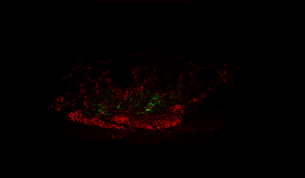

Alice Rennie
Glitch Art
Eyes are something that I've always really enjoyed drawing - how you draw a character's eyes can make or break their design. It's interested to draw new, interesting/unique eyes for every character I draw (or for the ones that I leave similar, have them be similar with an intent), so I thought it would be a fun idea to glitch eyes. Especially since we say that eyes are windows to the soul, I thought it would be interesting to depict those windows to the soul, or perhaps the soul itself, being corrupted. The last image is my least favorite, which I made through text editor, while the other two I created using Audacity.

